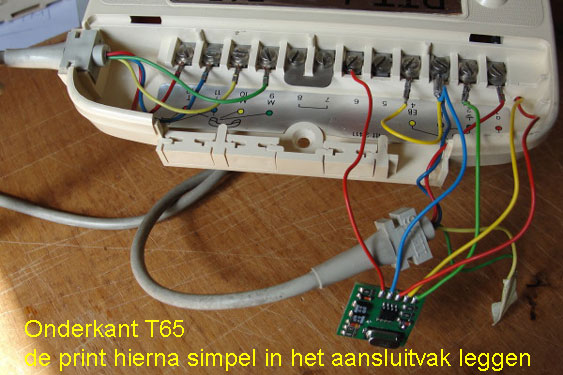
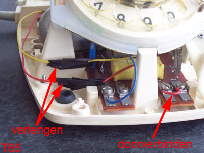
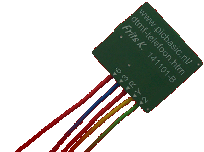
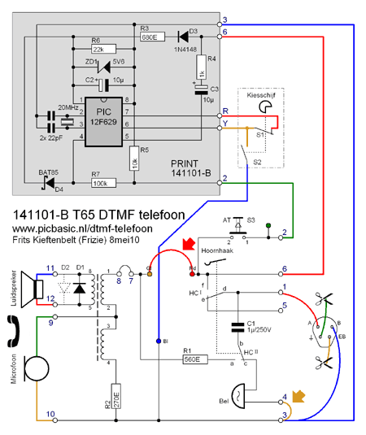

Schema T65 telefoon in originele staat, getekend in rust met hoorn op de haak.
Hieronder extra informatie over de 141101.
Het artikel van de 141101 puls naar toon omzetter (pulse to tone converter) zelf is hier te vinden.
Korte beschrijving standaard T65 telefoontoestel
Situatie 1: Er wordt gebeld.
Door een vrij hoge spanning (tot soms wel 160V) over telefoonlijn a en b gaat de bel rinkelen.
Als de hoorn wordt opgenomen schakelen wisselcontacten HCI en
HCII om en wordt de bel afgekoppeld.
Tevens is er nu verbinding met de luidspreker en microfoon in de hoorn.
De trafo van de luidspreker heeft een grappige functie.
Doordat de microfoon met twee identieke wikkelingen (1-2 en 3-4) in tegenfase zijn verbonden
wordt het ontvangen geluid wél doorgegeven aan de luidspreker in de hoorn,
maar het geluid van de eigen microfoon (vrijwel) níet, waardoor je je zelf nauwelijks terughoort.
Diode D1 (in sommige toestellen ook D2) beschermt het luisterend oor tegen hoge storingspieken op de lijn.
Schema T65 telefoon in originele staat, getekend in rust met hoorn op de haak.
Situatie 2: Iemand opbellen.
De hoorn wordt van de haak genomen waardoor de telefoonbel wordt afgekoppeld en de hoorn en kiesschijf met de telefoonlijn worden verbonden.
Door aan de kiesschijf te draaien wordt eerst S2 gesloten waardoor een kortsluiting ontstaat.
S2 heeft een dubbelfunctie, niet alleen zorgt deze voor de lijnkortsluiting als aan de kiesschijf wordt gedraaid,
maar tevens overbrugt hij de luidspreker en microfoon,
waardoor de telpulsen van S1 tijdens het terugdraaien van de kiesschijf niet hoorbaar zijn door de luidspreker.
S1 en S2 zitten in de kiesschijfbehuizing waarbij S1 in rust is gesloten en S2 geopend (zoals het schema is getekend).
Wordt er nu aan de kiesschijf gedraaid dan sluit S2 zich meteen en opent pas weer als de kiesschijf helemaal terug in de ruststand is.
Wanneer er dus een cijfer wordt gedraaid wordt S2 gesloten, maar is S1 ook nog steeds gesloten, een kortsluiting over lijn a en b dus.
Alleen bij het (vanzelf) terugdraaien van de kiesschijf opent S1 zich een aantal maal, afhankelijk van het gedraaide cijfer.
Is bijvoorbeeld cijfer 9 gedraaid, dan wordt S1 negen maal geopend tijdens het vanzelf terugdraaien van de kiesschijf.
Wordt cijfer 0 gedraaid, dan volgen er geen 0, maar 10 pulsjes.
Nadat de kiesschijf helemaal is teruggedraaid opent S2 zich weer en kan er (eventueel) een verbinding worden gemaakt.
Condensator C1 heeft een dubbel functie.
In rust staat deze in serie met de telefoonbel.
Als nu de hoorn van de haak wordt genomen dan wordt de telefoonbel afgekoppeld en komt C1 nu als RC combinatie (met R1) over S1
(de telpulsschakelaar van de kiesschijf) als vonkenblusser te staan om de levensduur van de contacten van S1 te verlengen.
AT = Aardings Toets
De aardingstoets krijgt in dit project de functie van herhaaltoets.
EB = Extra Bel
Over aansluitingen 3 en 4 kan een extra telefoonbel worden geplaatst (in serie met de bel van de telefoon zelf dus).
Wordt hier geen gebruik van gemaakt dan moet aansluiting 3 met 4 worden doorverbonden, anders doet de telefoonbel zelf het niet.
Dus even controleren of deze verbinding in de telefoon is gemaakt!
De vernieuwde T65
Als de kleine 141101-B print in de T65-telefoon is ingebouwd en aangesloten, dan genereert de kiesschijf DTMF tonen en dus geen pulsen meer.
Het printje is smal en kan in het vak van de telefoon liggen waar de aansluitpunten zich bevinden.
Om ruimte voor een connector op de print te besparen zijn de soepele(!) draden rechtstreeks aan de print gesoldeerd.
De 141101-B print is als compleet gemonteerd en werkend geheel voor 25 Euro verkrijgbaar (Hier bestellen).
De print aansluiten


De gele en rode draad van de kiesschijf loshalen en verlengen.
De vrijgekomen aansluitpunten Gl en Rd doorverbinden.
|  | |
| De aansluitingen staan ook op de achterzijde van het printje vermeldt. |
De groene draad (punt 2 van de 141101-B print) moet worden verbonden met aansluitpunt 2 van de T65.
De korte rode draad (punt 6 van de 141101-B print) moet worden verbonden met aansluitpunt 6 van de T65.
De blauwe draad (punt 3 van de 141101-B print) moet worden verbonden met aansluitpunt 3 van de T65,
hierop zit ook al de blauwe draad van de telefoonlijn en de gele die naar punt 4 loopt.
Koppel in de telefoon de gele draad van de kiesschijf los, en verbind deze nu aan de lange gele draad (punt Y (yellow)) van de 141101-B print (zie foto).
Koppel in de telefoon de rode draad van de kiesschijf los, en verbind deze nu aan de lange rode draad (punt R) van de 141101-B print.
In de telefoon zelf moeten nu de twee aansluitpunten (Gl en Rd) waar eerst de gele- en rode draad van de kiesschijf mee verbonden zaten nu worden worden doorverbonden, zie het schema bij de rode dikke pijl (of bovenstaande foto's).
|  D1, D2, R1, R2 en C1 zitten al op de print van de T65 telefoon zelf. Om verwarring te voorkomen wordt de componentnummering op de 141101 print voortgezet. |
Het 141101-B printje krijgt voeding uit de telefoonlijn (ofwel het kabel- of glasvezelmodem) zodra de hoorn van de haak wordt genomen.
Er is dus geen externe voeding nodig.
Wanneer de hoorn op de haak ligt krijgt de PIC geen voedingsspanning omdat hoornhaakcontact
HCI (d-f) dan de verbinding met telefoonlijn a verbroken heeft.
Alleen de telefoonbel staat dan via C1 over telefoonlijn a en b.
Zodra de hoorn wordt opgenomen krijgt de PIC spanning en is het mogelijk om iemand op te bellen door óf met de kiesschijf een nummer te draaien,
óf door de herhaaltoets (S3, AT) het laatst gedraaide telefoonnummer op te laten bellen.
Meer info: zie het puls naar toon omzetter project.